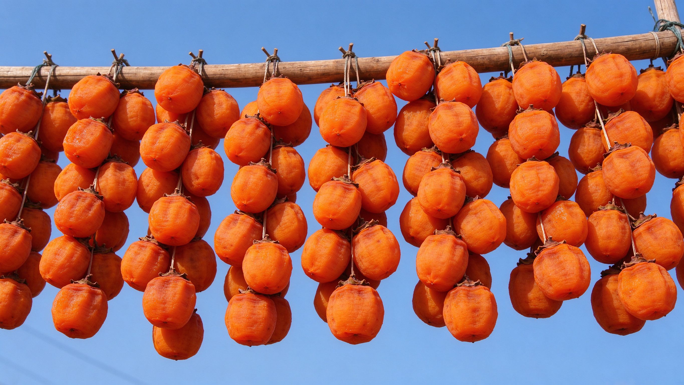
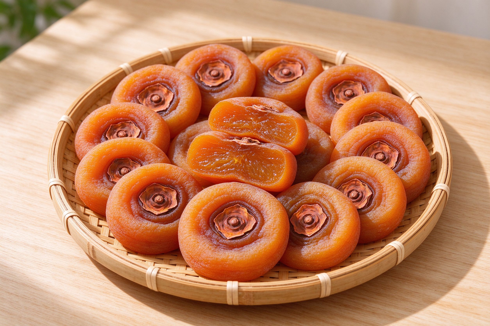
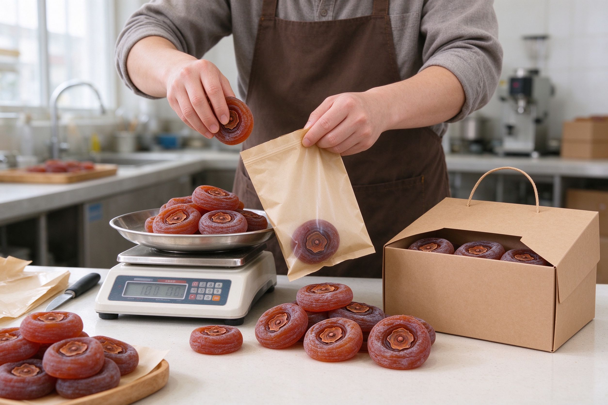
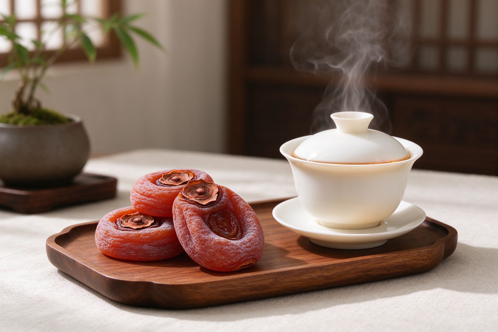
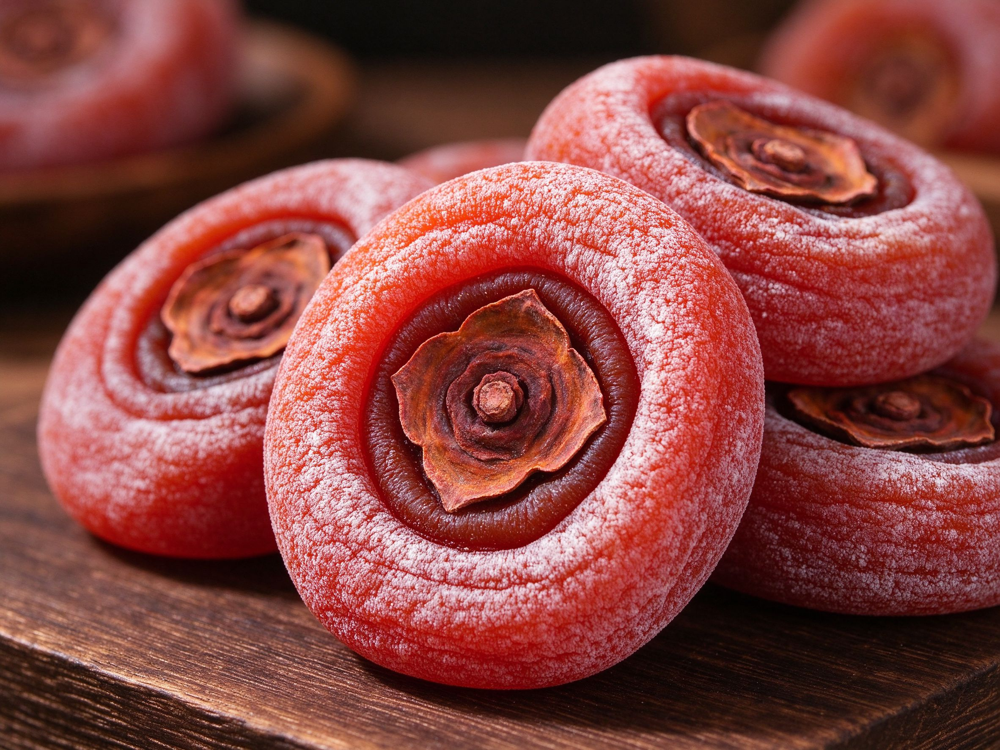
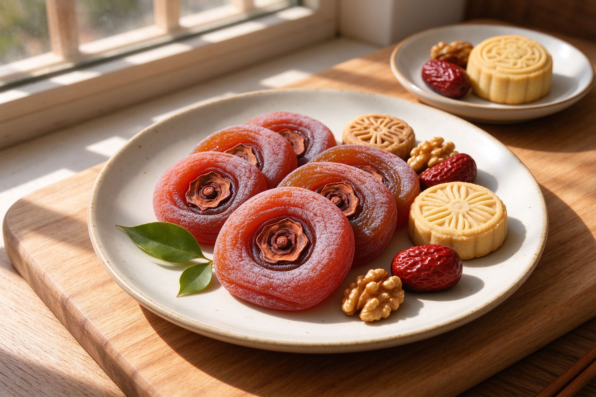
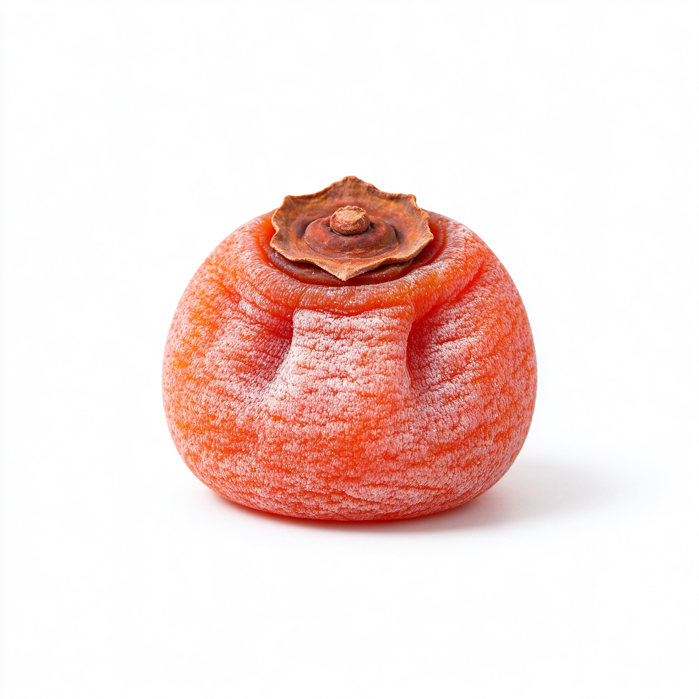
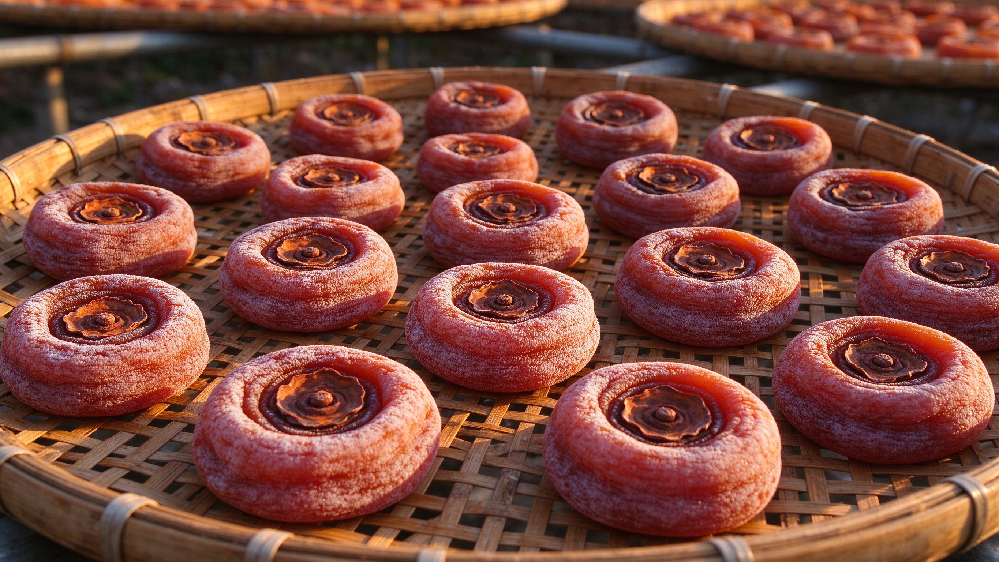

从地方土特产到全国性年货与健康零食，柿饼产业正经历消费升级、渠道电商化与品牌化三重变化，本文梳理背后的趋势与挑战。
柿饼产业动态、市场格局与行业观察，看懂这门“甜蜜生意”。
走访富平、恭城等柿饼主产区，了解各地品种与工艺特色。
价格、渠道与消费趋势分析，帮买卖双方看行情、做判断。
柿饼营养与食用宜忌，吃得明白、吃得安心。
柿饼的花样吃法与挑选保存技巧，把柿饼吃出更多可能。
柿饼是怎么来的、柿霜是什么，那些常被问到的冷知识。

富平的流心、恭城的月柿、渑池的牛心柿……中国柿饼主产区各有什么特点？本文按产区为你盘点。
富平柿饼凭什么出名？从流传的宫廷贡品故事到国家地理标志保护产品，尖柿品种、吊晒工艺与流心口感，一起来看。

与富平流心柿不同，广西恭城月柿以“个大、肉厚、韧糯”著称，还是传统出口东南亚的柿饼货源。

从十几块到几十上百元一斤，柿饼价差背后的品种、产地、品级与渠道逻辑，一次讲清。
直播带货、产地直发、礼盒定制……柿饼正从农贸市场走向直播间，渠道变迁对买卖双方意味着什么？

柿饼富含碳水、膳食纤维与多种维生素，是传统健康零食，但含糖量高，怎么吃更合适？

柿饼虽甜，但鞣酸、高糖和黏性都需注意。空腹、过量、与高蛋白同食等常见误区一次说清。

除了直接吃，柿饼还能蒸、烤、炖、入粥、夹坚果。六种家常吃法，让柿饼吃出更多花样。

柿霜是不是越多越好？怎么判断柿饼新不新鲜？保存防霉的关键点都在这里。

选果、去皮、晾晒、捏心、回软、出霜——一枚柿饼的诞生要经过哪些步骤？带你了解传统柿饼工艺。
柿饼表面的白霜是发霉还是糖？成分是什么、为什么有的厚有的薄？一文说清。
柿饼资讯网（柿饼.cn）专注于柿饼领域的原创资讯：行业趋势、产区故事、行情分析、养生知识与美食做法。我们坚持内容真实、来源可溯，为读者提供有价值的柿饼信息。